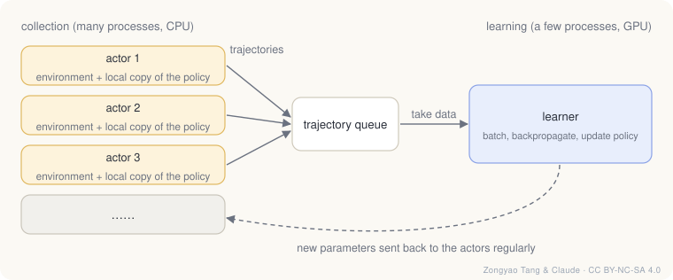

The thread: reinforcement learning's training data has to be produced by running environments, which changes the shape of the pipeline → the classic answer is to give collection and learning to different processes → a more thorough way is to move the environment itself onto the GPU → another direction is to store the data produced and use it several times → finally, compare it with large-model training in the language of part 0. You will find the knowledge needed has all been covered already; only the bottleneck has moved.
Part 10 · Reinforcement learning (optional)10.3 The shape of reinforcement learning systems
Translated by AI (Anthropic's Claude) from the Chinese edition. The Chinese original is the reference.
This unit answersHow does a reinforcement learning training system differ from the large-model training covered earlier?
Follows 10.2, and returns to the pipeline diagram of 0.1: reinforcement learning's "data supply" is not reading from disk but produced by interacting with an environment.
- Data is not read; it is "run" out of interaction with an environment
- Collection and learning separated: many actors, a few learners
- Moving the environment onto the GPU: thousands upon thousands of simulations at once
- Experience replay: store the data and use it again and again
- Against part 0: the same pipeline, different bottlenecks
Explanation
1Data is not read; it is "run" out of interaction with an environment
Large-model training's data lies on disk, and the first step of the pipeline is "read". Reinforcement learning's data has to be produced by running: at every step the policy network does one inference to choose an action, then the environment's simulation program moves forward one step. Most of the training time often goes on this, not on backpropagation.
Recall the pipeline of 0.1. One step of large-model training: read data → preprocess → copy to the GPU → forward and backward → synchronise gradients → update parameters. The data is ready-made, and the first step is only IO.
One step of reinforcement learning. Taking PPO as an example (10.2):
- Collect. Repeat hundreds to thousands of times: the policy network looks at the current state and infers an action; the environment carries out the action and computes the next state and the reward. Record these.
- Learn. Compute advantages from the data just collected, do a few rounds of forward and backward, and update the policy and the critic.
- Throw the data away and collect afresh with the new policy.
The collection phase takes the place of "reading data", and it involves a great deal of computation itself.
The collection phase has two kinds of computation, of completely different character.
- Simulating the environment. A physics engine computing collisions and forces, a game emulator executing a frame, or (in the language model setting) running a piece of code to check an answer. Traditionally these are CPU programs, with complicated logic and many branches, and each environment instance runs serially.
- Running the policy. One forward pass of a neural network. The networks in reinforcement learning are usually small (an MLP of a few layers or a small convolutional network), so one inference is very little computation.
The two alternate: infer once, simulate one step, infer once more. There is a strict order of dependency between them, and as with the autoregressive generation of 1.4, the inside of one trajectory cannot be parallelised.
Where the time goes. In many reinforcement learning tasks, simulation is the bulk. The network is small and backpropagation quick; while learning a task may take hundreds of millions or even billions of steps of interaction. So the typical picture is dozens or hundreds of CPU cores running simulation at full load, with GPU utilisation only ten-odd percent. In the terms of 0.2, this does not mean something is wrong with the system; the bottleneck simply is not on the GPU.
The direction of parallelism. The inside of one trajectory cannot be parallelised, but many can run at once: open N copies of the environment, and at each step have the policy network do one batched inference on N states, giving N actions, then have the N environments each take a step. This is called a vectorised environment. It turns policy inference into a batched operation (the benefits of batching from 9.1 hold here too), while simulation is shared among several CPU cores. The next three cards are different realisations of this idea.
The metric. The throughput of a reinforcement learning system is usually measured in "environment steps per second". A good implementation and a naive one can differ by several orders of magnitude.
An analogyLarge-model training is like a factory with a warehouse of ready raw materials, which only has to process them. Reinforcement learning is like a restaurant with its own farm: first the vegetables have to be grown, and what is grown and how depends on the chef's latest skills. However fast the kitchen, if the vegetables have not grown, it can only wait.
So the core problem of designing a reinforcement learning system is "how to produce data faster". To judge its throughput, look at how many steps of environment interaction it produces per second, not only at how many samples it trains on per second.
- Collection is the bottleneck, and naturally parallel. The most direct way is to split it off.
2Collection and learning separated: many actors, a few learners
The classic distributed reinforcement learning architecture divides the system into two roles. Actor processes run the environment and the policy, and only produce data; there are many of them, running on CPUs. Learner processes receive data from the actors, do backpropagation on GPUs to update the model, and send the new parameters back to the actors. Each side runs at its own pace, without waiting for the other.

Actors only produce data, learners only learn, and neither waits for the other Why separate them. Collection wants many CPU cores, learning wants GPUs. Tie them into one synchronous loop (the previous card's "collect a batch, learn a round"), and the GPU sits idle during collection while the CPU sits idle during learning. Separated, each runs at full load.
A quick look at the synchronous version first. One learner, N environments. At each step: the N environments each give a state → the policy network infers in a batch → the N environments each take a step. The problem is that every step waits for the slowest environment. An environment's time per step is often very uneven (some game screens take a lot of computing, physics simulation is slower at moments with many collisions), and everyone is held back by the slowest. The slow-node problem of 7.1 happens here at every step.
The asynchronous version: IMPALA.
- Each actor has a local copy of the policy parameters, interacts with its own environment independently, sends a stretch of trajectory to the learner once it has gathered enough, and then, waiting for nobody, carries on collecting.
- The learner keeps taking received trajectories off the queue, forming batches, and doing backpropagation.
- Actors periodically pull the latest parameters from the learner.
Nobody waits for anybody. There can be hundreds or thousands of actors, spread over many machines.
A new problem: policy lag. While an actor collects a stretch of trajectory, the learner has already updated several times. By the time the trajectory reaches the learner, the policy that produced it is an "old version". As 10.2 said, policy gradient requires data from the current policy. Computing directly with an old policy's data introduces bias.
One of IMPALA's contributions is a correction (called V-trace): reweight the data by "the probability of the new policy choosing this action ÷ the probability of the old policy choosing it", "converting" old data into a signal valid for the new policy. You saw this ratio in PPO, and the ideas in the two places are related.
Another way of dividing: Ape-X. Aimed at the value route (the DQN family). Many actors write experience into a shared replay buffer, and the learner samples from the buffer to learn. Because Q-learning is off-policy anyway, old data can be used directly, with no correction needed.
Where inference goes. Actors have to run policy inference. Two arrangements:
- Each actor infers on its own CPU: simple, but slow once the network is a little larger.
- Centralised inference: actors only run environments, sending states to an inference service on a GPU, which batches requests from many actors, infers, and sends the actions back. This is really the inference service of 9.3: requests arrive one after another, and batch size has to be traded against latency. A reinforcement learning training system has a small inference serving system embedded in it.
Seen through the eyes of part 0. This architecture is "fill the waiting with other work": collection and learning overlap. The cost is the same as elsewhere: data in transit "goes stale". When 7.1's DDP overlapped communication with computation there was no such problem, because gradients do not go out of date; here data does go out of date, so there is an extra correction step.
An analogyLike a newspaper: many reporters are out chasing stories (actors), sending their copy back as they go; the editorial office (learner) keeps processing what arrives, and from time to time sends the reporters its latest instructions. Reporters do not wait for the editors, and the editors do not wait for any one reporter.
So this architecture can scale collection to thousands of CPU cores. It brings a new problem: the policy in an actor's hands is always a little older than the learner's, and updating the new policy with data from an old one needs a correction.
Builds on Data is not read; it is "run" out of interaction with an environmentPPO: change the policy only a small step at a timeFive ideas come back in every layerScaling efficiency: multi-GPU throughput ÷ (single-GPU throughput × number of GPUs)- The previous card shared collection among many CPUs. There is a more thorough direction: make collection need no CPU at all.
3Moving the environment onto the GPU: thousands upon thousands of simulations at once
With simulation on the CPU and the network on the GPU, data has to go back and forth between them at every step. The more thorough way is to write the simulation itself as tensor operations on the GPU: the states of thousands or tens of thousands of environments are held in one large tensor, and one operation moves every environment forward a step at once. The whole loop of collection and learning is on the GPU, and data never leaves GPU memory.
The three overheads of the traditional way.
- Simulation is on the CPU, each environment instance taking part of a core. Thousands of environments need hundreds of cores.
- At each step, states have to be copied from main memory to GPU memory (for network inference), and actions copied back from GPU memory to main memory (for simulation). Not much data, but it crosses PCIe at every step, synchronously. As 3.6 explained, such synchronisation points interrupt the GPU's queue of work.
- The policy network is small, and each inference is just a few tiny kernels. The GPU spends most of its time waiting for the CPU to compute the next step's state. The "waiting for orders" of 2.3 is very typical here.
Simulation on the GPU. Take physics simulation as an example. Each environment's state is a set of numbers (the positions and velocities of the objects, the joint angles). Stack the states of N environments into one tensor, with the first dimension the environment's index. One step of the physics engine (computing forces, detecting collisions, integrating to get new positions and velocities) is written as batched operations on this tensor. To the GPU, this is no different in essence from one forward pass of a neural network.
NVIDIA's Isaac Gym is representative work in this direction: physics simulation, computing observations, computing rewards, and policy inference and training are all on the same GPU, with the data in between always tensors in GPU memory. The paper reports running thousands to tens of thousands of robot environments at once on one GPU, cutting some tasks that used to need a CPU cluster running for days down to tens of minutes or a few hours.
Why it works so well, in earlier terms.
- Part 3: what GPUs are good at is doing the same operation on large amounts of data. Ten thousand environments following the same physical rules is exactly that.
- 0.1: with no round trips between CPU and GPU, "waiting for data" and "waiting for orders" disappear at the same time.
- 9.1: the batch for policy inference goes from dozens to ten thousand, so even a small network can put the GPU to use.
The preconditions.
- The simulation's logic has to be batchable. Physical rules are uniform, which suits. Simulators with complicated logic and many branches, where every instance takes a different path (many existing games, environments that call external programs), are hard to move onto the GPU. 3.4 explained what branch divergence costs a GPU.
- All the environments' states have to fit in GPU memory. In environments with camera images, each instance's observations are large, and far fewer can run in parallel.
- The simulation has to be realistic enough for the learned policy to carry over to the real world (10.4). Physics simplified for speed may let a policy learn tricks that only work in simulation.
The algorithms have to change too. With ten thousand environments in parallel, each environment needs to run only a very short stretch (a few dozen steps) to make up a large batch of data. The character of the data changes from "a few very long trajectories" to "masses of very short fragments". Algorithms like PPO are naturally suited to this pattern, which is one reason it became the mainstream in robot training.
An analogyBefore, ten thousand workers each made a part by hand at their own bench, carrying the half-finished piece to the inspection room and back after every step. Now there is one press stamping out ten thousand parts at once, with inspection right beside it on the same line.
So one GPU can reach the collection speed that used to need a CPU cluster. Much of the rapid progress in robotics in recent years comes from this change. Its precondition is that the simulation itself can be written as regular operations that can be executed in batches.
Builds on Collection and learning separated: many actors, a few learnersSynchronisation points: whenever the CPU needs an actual value from the GPU, it must stop and waitThis path costs several microseconds every time; when the model is small and its operators fragmented, it becomes the bottleneckThe CPU is a sports car, the GPU a busBatching: read the weights once, serve a batch of requests- The previous two cards were about producing data faster. Another direction is to make each piece of data count several times over.
4Experience replay: store the data and use it again and again
Producing data is expensive, so do not throw it away after one use. Experience replay stores every step the agent has experienced in a large buffer, and training samples from it again and again. Each piece of data is used many times on average, so far fewer environment interactions are needed. It applies only to algorithms that can use old data, that is, the off-policy methods of 10.2.
Two kinds of efficiency.
- Sample efficiency: how many steps of environment interaction it takes to learn a task.
- Computational efficiency (wall-clock time): how long, and how much compute, it takes to learn a task.
They are not the same thing. An algorithm may need ten times the samples, but if producing and processing each sample is a hundred times faster, it learns sooner.
The replay buffer. A store of large capacity (say a million steps), holding recent experience: (state, action, reward, next state). New data comes in, the oldest is pushed out. Training samples a batch from it at random each time.
When 10.2 covered DQN it named two roles: breaking the correlation between neighbouring samples; letting each piece of data be used many times. Here the concern is the latter. Methods with replay can do several gradient updates for every step of data collected; PPO throws each piece of data away after a few rounds.
Why it has to be off-policy. The data in the buffer was produced by many different past versions of the policy. As 10.2 said:
- Q-learning-style methods need only "a transition that really happened in the environment", and do not care which policy produced it. They can use it directly.
- Policy-gradient-style methods require data from the current policy. Old data cannot be used directly (corrections like the V-trace of two cards back can handle only data that is "a little old").
So in systems with replay, the core algorithm is usually from the value route, or an actor-critic variant designed specifically to be able to use old data.
Not all experience is equally useful. Sampling uniformly at random mostly picks up ordinary experience learned long ago. Prioritised replay makes experience with large TD error ("the result of this step surprised me") more likely to be sampled. The Ape-X of two cards back is distributed prioritised replay.
How to choose.
Use once and discard (PPO family) With replay (DQN family, off-policy actor-critic) Times each piece of data is used A few Many Sample efficiency Low High Stability, tuning Easy Harder (the deadly triad of 10.2) Suits Very cheap simulation, massively parallel Every step of interaction is expensive The bottleneck is often Simulation speed Learning speed (GPU) With the GPU parallel simulation of the previous card, the balance has tipped a long way to the left: data becomes so cheap that sample efficiency hardly matters, and simple, stable PPO becomes the first choice. But for learning directly on real robots, or where rewards have to be given by people, sample efficiency still comes first.
The replay buffer is a systems problem in its own right. Storing a million steps of experience with images takes tens of GB; sampling from it at random is random memory access (0.3); and when distributed it is a shared service written to by many actors and read by the learner. The considerations of data loading in 2.4 reappear here in another form.
An analogyLike doing exercises: work through a book of problems once and throw it away, and you have to buy many books to learn. Gather the problems you did into a notebook of mistakes and redo them every so often, and the same problems teach you more.
So the choice of algorithm and the shape of the system are bound together: when simulation is cheap, use "use once and discard" methods like PPO and rely on parallel numbers; when every piece of data is expensive (real robots, people involved), use methods with replay and rely on reuse to raise efficiency.
Builds on Moving the environment onto the GPU: thousands upon thousands of simulations at onceThe value route: learn to score each action, then pick the highest scoreThe memory hierarchy: each level further away is one to three orders of magnitude slowerUsed later in Against part 0: the same pipeline, different bottlenecks- Finally, put this unit back into the framework of the whole course.
5Against part 0: the same pipeline, different bottlenecks
Put reinforcement learning training back into the framework of 0.1, and the knowledge it needs has all been covered already; only the weight of each stage has changed. In large-model training the model is large and the data ready-made, and the bottleneck is computation and communication; in reinforcement learning the model is usually small and the data has to be produced on the spot, and the bottleneck is producing data and coordinating CPU and GPU.
Item by item.
Large-model training Reinforcement learning training (typical case) Model size Hundreds of millions to hundreds of billions of parameters Often only hundreds of thousands to tens of millions Where data comes from Storage Environment simulation + policy inference Waiting for data Generally not a main problem Often the biggest bottleneck Waiting for orders Negligible with large models Small networks, small kernels, very prominent Waiting on compute The main issue (matrix multiplication) Usually not; only when the network is large Waiting for the other GPUs The main issue across machines Many tasks need only one GPU GPU utilisation Should be close to full Low is normal Measuring throughput Tokens/second, MFU Environment steps/second Which earlier units apply directly.
- 0.2: when GPU utilisation is low, first tell whether the system has a problem or the bottleneck simply is not on the GPU. In reinforcement learning it is often the latter.
- 2.3, 3.6: inference of small networks is overhead-bound. torch.compile, CUDA Graphs and larger batches work noticeably well here. Every round trip between CPU simulation and GPU inference is a synchronisation point.
- 2.4: parallel environments and DataLoader workers are the same kind of problem: many processes, passing data between processes, not enough CPU cores.
- 5.1: when CPU simulation is heavy, the number of CPU cores and NUMA placement matter more than the GPU model.
- 9.1, 9.3: centralised policy inference is a small inference service.
- 7.4: long training times and many processes need checkpoints and fault tolerance too. Actor failures are easier to handle (one fewer just means data arrives a little more slowly); the learner must have checkpoints.
The exception: reinforcement learning with very large models. The above is the classic case of "small network + simulated environment". When the policy itself is a large language model (10.4), things are reversed:
- The collection phase = having the large model generate text, which is the decode of 9.1, and expensive;
- The learning phase = backpropagation through the large model, which is the distributed training of part 7;
- The environment (say executing code, checking answers) is relatively cheap, but may be slow, with uneven timing.
The system then is a combination of "an inference cluster + a training cluster", and the content of nearly all of this course's first nine parts comes into use.
A unified view. Whatever the kind of training, the questions are the same few: where does data come from, and how fast; where is computation done, and what limits it; how are the parts coordinated, and who is waiting for whom. Reinforcement learning brings no new principles; it only reorders the weight of each stage of the pipeline in 0.1. This is also why this course started from "the pipeline and the four waits": change the field, and this way of asking still works.
An analogyBoth are restaurants, but one is a large central kitchen with ingredients arriving by the lorry-load, where the trouble is whether there are enough stoves and how several kitchens work together; the other is a small place that grows its own vegetables, where the stoves are often idle and the trouble is that the vegetables grow too slowly. The principles of running them are the same; the headaches are in different places.
So troubleshooting the performance of reinforcement learning training uses the same approach as 11.1: measure first, then break it down, find the biggest part. Only the answer will mostly land on "waiting for data" and "waiting for orders", not on matrix multiplication.
Builds on Experience replay: store the data and use it again and again"Slow" on the pipeline comes in only four kinds: waiting for data, on compute, for orders, for the other GPUsGPU utilisation measures "busy or not", not "busy doing something worthwhile"This path costs several microseconds every time; when the model is small and its operators fragmented, it becomes the bottleneckWhich station of the pipeline each argument tunes
Putting it together
Reinforcement learning's data is run, not read: simulating the environment and running the policy take most of the time. The classic architecture separates collection (actors) from learning (learners), with many CPU processes feeding a few GPUs. Parallel simulation on the GPU turns the environment into tensor operations too, saving the back and forth between CPU and GPU. Experience replay lets data be used again and again. Compared with large-model training, it gets stuck more often on waiting for data and waiting for orders.
Test yourself
Without looking back at the explanation, say it in your own words.
- How does the pipeline of reinforcement learning training differ from that of large-model training? Where does its time mainly go?
- What does each of the two kinds of process do in the actor-learner architecture? What problem comes from actors and learners being out of step, and how is it handled?
- What does parallel simulation on the GPU save compared with "CPU simulation + GPU network"? What are its preconditions?
- What problem does experience replay solve? Why can it be used only with off-policy algorithms? How do you choose between "sample efficiency" and "computational efficiency"?
- Analysed with the four waits of part 0, where is the bottleneck of reinforcement learning training usually? How does it differ from large-model training?